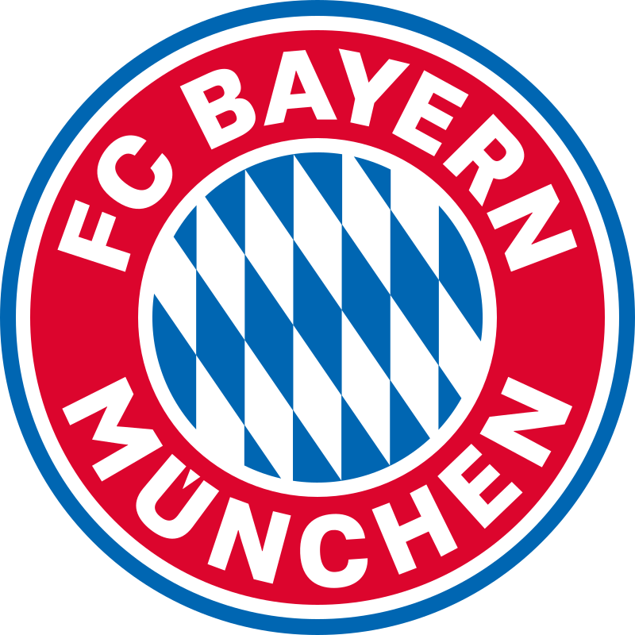
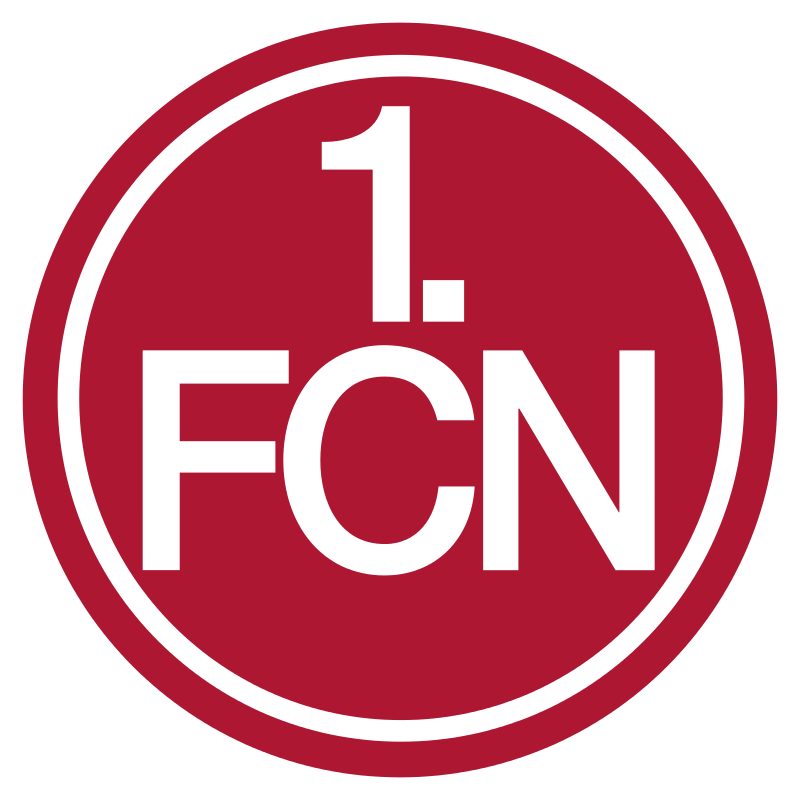
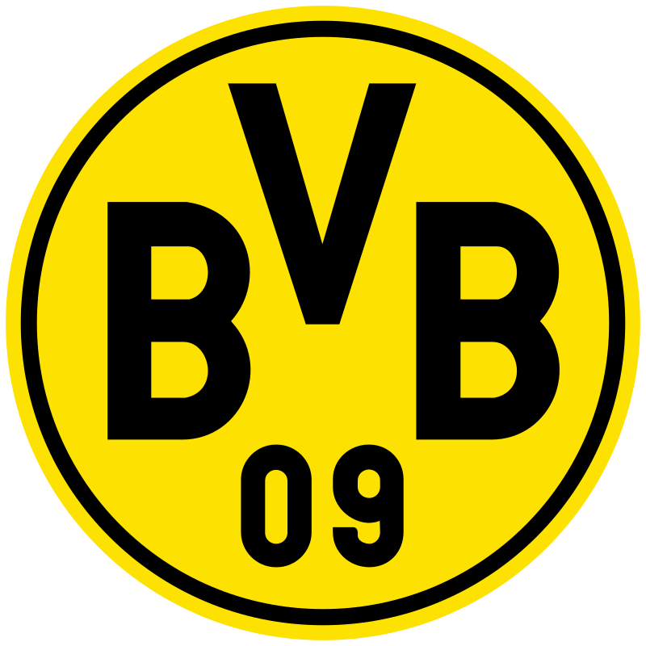
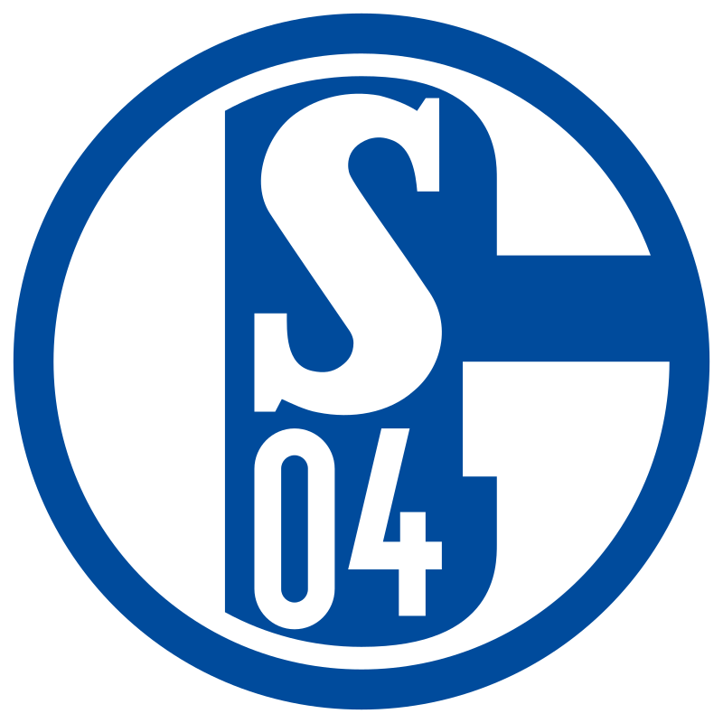
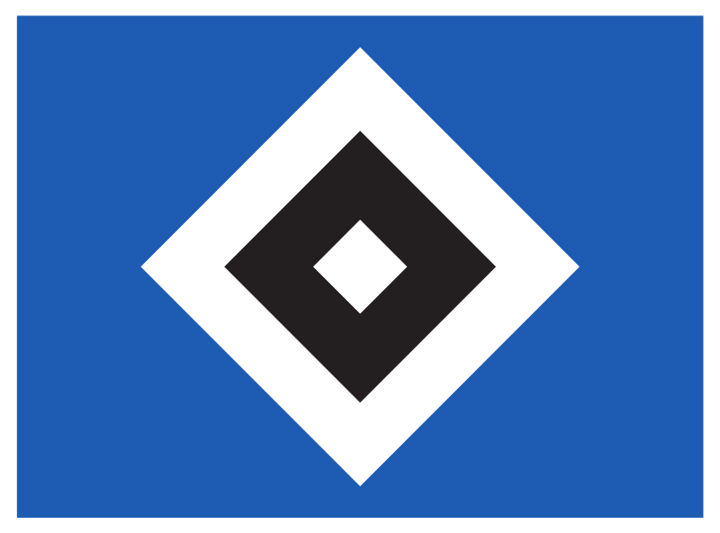
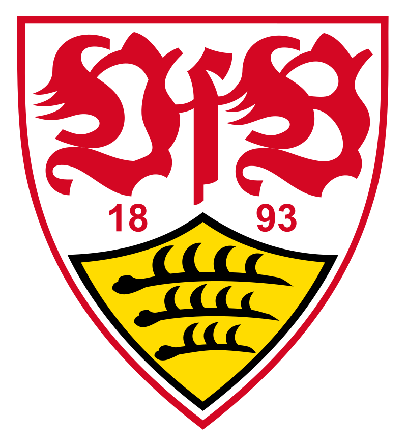
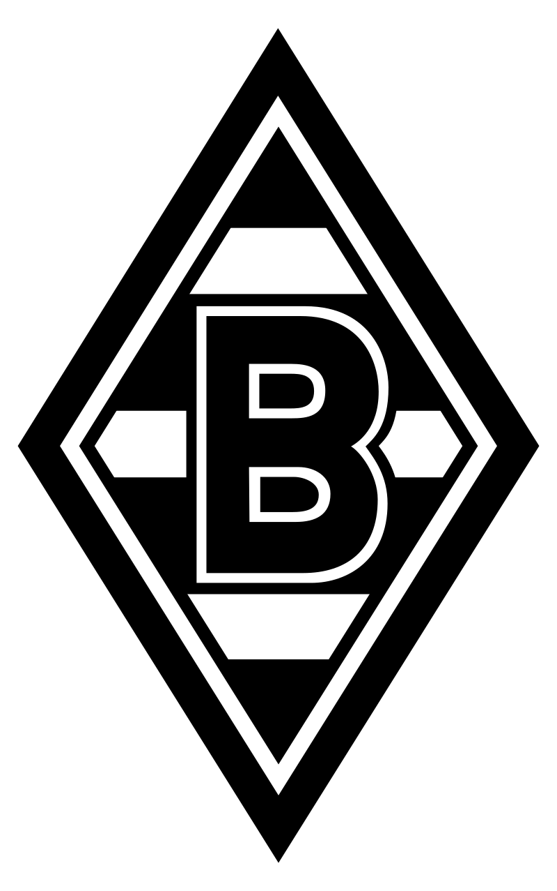
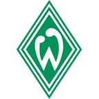
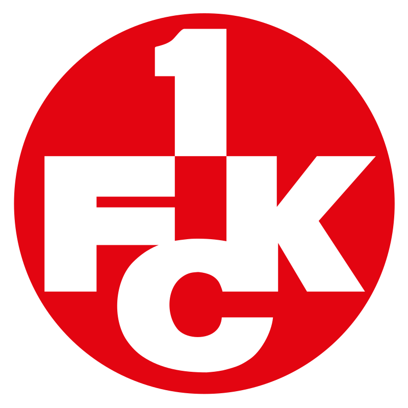

الدوري الألماني الدرجة الأولى لكرة القدم والمُسماة بـالبوندسليغا هو دوري المحترفين لكرة القدم ويعدّ من الدوريات النخبة على مستوى العالم. ويعتبر الدرجة الممتازة والأساسية في البلاد، لكونه قمة أنظمة دوري كرة القدم الألمانية. يتنافس عليه 18 فريقا تتبع نظام الترقية أو النزول مع بوندسليغا 2 (دوري الدرجة الثانية ). ومنذ تأسيس البوندسليغا تنافس فيه ما مجموعه 50 ناديًا. وهيمن نادي بايرن ميونخ على البطولة منذ سبعينات القرن العشرين، وفاز باللقب 30 مرة. وعلى أي حال شهدت البوندسليغا أبطالاً آخرين كان أبرزهم هامبورغ وبروسيا دورتموند، وفيردر بريمن، وبوروسيا مونشنغلادباخ، وشتوتغارت وفولفسبورغ. تحتل البوندسليغا أحد مراتب القمة لأنظمة الدوري الوطنية، وتأتي حالياً في المركز الثالث في أوروبا بعد انكلترا وإسبانيا وفقاً لتصنيف الاتحاد الأوروبي لكرة القدم (UEFA) الخاص بدرجات الدوري وذلك استنادًا لنتائج الأندية الألمانية في المسابقات الأوروبية الأخيرة. وتأخرت ألمانيا في إنشاء الدوري الوطني إلى وقت متأخر جدًا خلافًا لمعظم البلدان؛ حيث لم تتشكل البوندسليغا حتى سنة 1963، وشهد تنظيم الدوري وبنيته تغيرات كثيرة في البلاد إلى يومنا هذا. وتأسس الدوري بالأساس من قبل اتحاد ألمانيا لكرة القدم، ولكنه يدار الآن من قبل DFL. وينطبق مصطلح البوندسليغا أيضا على دوري كرة القدم في النمسا إلا أنه الاسم الشائع للدوري الألماني، ويستخدم للإشارة إلى بطولات الدوري العالي المستوى في العديد من الرياضات الأخرى سواءً في ألمانيا أو النمسا. حامل اللقب الحالي هو نادي بايرن ميونخ بعدما فاز بلقبه التاسع على التوالي ليصبح في رصيده 31 لقبًا.
درع الدوري الألماني
ستاد اليانز أرينا , ستاد نادي بايرن ميونخ
سنوات البطولة |
عدد الألقاب |
النادي |
| 1931–32, 1968–69, 1971–72, 1972–73, 1973–74, 1979–80, 1980–81, 1984–85, 1985–86, 1986–87, 1988–89, 1989–90, 1993–94, 1996–97, 1998–99, 1999–2000, 2000–01, 2002–03, 2004–05, 2005–06, 2007–08, 2009–10, 2012–13, 2013–14, 2014–15, 2015–16, 2016–17, 2017–18, 2018–19, 2019–20، 2020–21 |
31 لقباً |

بايرن ميونخ |
| 1919–20, 1920–21, 1923–24, 1924–25, 1926–27, 1935–36, 1947–48, 1960–61, 1967–68 |
9 القاب |

نونبيرج |
| 1955–56, 1956–57, 1962–63, 1994–95, 1995–96 , 2001–02 , 2010–11 , 2011–12 |
8 لقباً |

بروسيا دورتموند |
| 1933–34, 1934–35, 1936–37, 1938–39, 1939–40, 1941–42, 1957–58 |
7 القاب |

شالكة04 |
| 1922–23, 1927–28, 1959–60, 1978–79, 1981–82, 1982–83 |
6 القاب |

هامبورج |
| 1949–50, 1951–52, 1983–84, 1991–92, 2006–07 |
5 القاب |

شتوتجارت |
| 1969–70, 1970–71, 1974–75, 1975–76, 1976–77 |
5 القاب |

بروسيا مونشنغلادباغ |
| 1964–65, 1987–88, 1992–93, 2003–04 |
4 القاب |

فيردر بريمن |
| 1950–51, 1952–53, 1990–91, 1997–98 |
4 القاب |

كايزر سلاوترن |
مواليد( 21 أغسطس 1988) هو لاعب كرة قدم بولندي يلعب في مركز الهجوم مع نادي بايرن ميونخ الألماني وهو قائد منتخب بولندا. يُشتهر بتمركزه وبراعته الفنية وحسن الإنهاء، ويُعتبر أحد أفضل المهاجمين في التاريخ، فضلاً عن كونه أحد أكثر اللاعبين نجاحًا في تاريخ الدوري الألماني. سجل أكثر من 500 هدف رسمي مع الأندية والمنتخب. بعد أن كان هداف الدرجة الثالثة والثانية البولندي مع زنيتشج بروشكوف، انتقل إلى فريق الدوري البولندي الممتاز لخ بوزنان، وكان هداف في الدوري كما فازوا به في موسم 2009–10. في عام 2010، إنتقل إلى بوروسيا دورتموند بمبلغ 4.5 مليون يورو، حيث فاز الدوري الألماني مرتين على التوالي، وحصل على لقب الهداف في أحد المواسم. في عام 2013، تأهل دورتموند إلى نهائي دوري أبطال أوروبا، حيث كان ثاني أفضل هداف في تلك البطولة، خلف كريستيانو رونالدو فقط. قبل بداية موسم 2014–15، وافق ليفاندوفسكي على الانضمام إلى منافس دورتموند المحلي، بايرن ميونخ، في صفقة انتقال مجانية. مع البايرن، فاز بلقب الدوري الألماني في كل من مواسمه الستة الأولى. كان ليفاندوفسكي جزءًا لا يتجزأ من فوز بايرن بدوري أبطال أوروبا في موسم 2019–20 كجزء من الثلاثية. هو واحد من لاعبين اثنين فقط، جنبًا إلى جنب مع يوهان كرويف، حققا الثلاثية الأوروبية، بينما كان أفضل هداف في جميع المسابقات الثلاث. مثّل منتخب بلاده بولندا منذ عام 2008، وخاض أكثر من 110 مباريات دولية وكان ضمن الفريق في بطولة أمم أوروبا 2012 وبطولة أمم أوروبا 2016 وكأس العالم 2018. برصيد 66 هدفًا دوليًا، يعد ليفاندوفسكي الهداف التاريخي لبولندا. فاز بجائزة أفضل هداف دولي في العالم لعام 2015 وجائزة أفضل هداف في العالم من الاتحاد الدولي لتاريخ وإحصاءات كرة القدم في عام 2020. وقد تم اختياره كأفضل لاعب بولندي لهذا العام وهو رقم قياسي بتسع مرات. في عام 2020، فاز ليفاندوفسكي بجائزة الفيفا لأفضل لاعب في العالم وجائزة أفضل لاعب في أوروبا. تم اختياره في فريق اليويفا للعام مرتين وتشكيلة الموسم في دوري أبطال أوروبا ثلاث مرات، وهو ثالث أفضل هداف في تاريخ المسابقة. حصل ليفاندوفسكي على لقب لاعب الموسم في الدوري الألماني برقم قياسي وهو أربع مرات. لقد سجل أكثر من 250 هدفًا في الدوري الألماني، وهو أفضل هداف أجنبي في تاريخ الدوري..